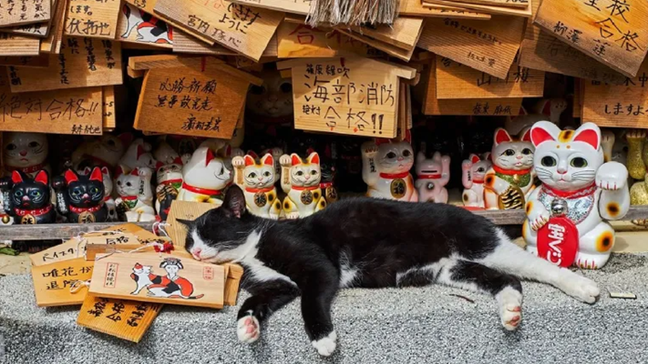

La Historia de los Gatos: Un Viaje Milenario
Los gatos son una de las especies más misteriosas y fascinantes de animales, pero su historia está profundamente entrelazada con la humanidad. Desde los antiguos egipcios hasta los hogares modernos, los gatos han jugado un papel fundamental en las sociedades humanas. Su domesticación, su relación con las civilizaciones y su evolución hasta convertirse en los compañeros felinos que conocemos hoy ha sido un proceso largo y lleno de historias interesantes.
Orígenes de la Domesticación
La historia de la domesticación de los gatos comienza hace unos 10.000 años, en el período conocido como el Neolítico, cuando los humanos comenzaron a pasar de ser nómadas a establecerse en comunidades agrícolas. A medida que las primeras civilizaciones creaban depósitos de grano, estos se convertían en un imán para roedores, los cuales a su vez atraían a los felinos salvajes, especialmente al gato africano silvestre (Felis lybica).
Los gatos empezaron a aproximarse a los asentamientos humanos en busca de comida, y los humanos comenzaron a tolerar su presencia debido a los beneficios que ofrecían en el control de plagas. Con el tiempo, los gatos se fueron adaptando a la vida cerca de los humanos, desarrollando una relación simbiótica. A diferencia de otros animales domesticados, los gatos no fueron domesticados de forma activa, sino que se seleccionaron de manera natural aquellos más sociables y menos temerosos de los humanos.
El Rol de los Gatos en el Antiguo Egipto
El gato comenzó a desempeñar un papel fundamental en la cultura egipcia, que lo veneraba como un símbolo de protección y fertilidad. Los egipcios reconocieron las habilidades de caza de los gatos y los asociaron con la diosa Bastet, representada como una mujer con cabeza de gato o como un gato entero. Bastet era la diosa de la alegría, la música, la danza, el amor y la protección del hogar. La relación de los egipcios con los gatos se convirtió en una de adoración, y su presencia en los hogares era considerada un signo de buena suerte.
En el antiguo Egipto, matar a un gato, incluso accidentalmente, era un crimen grave, y en algunos casos se castigaba con la muerte. Los gatos fueron tan apreciados que incluso se momificaban, y se les enterraba en tumbas junto a sus dueños, demostrando la profunda relación espiritual que los egipcios tenían con ellos.
La Expansión a Otras Culturas
Después de Egipto, los gatos se extendieron hacia otras culturas del mundo antiguo, incluidos los griegos y los romanos. Los griegos no tenían la misma veneración por los gatos que los egipcios, pero sí los reconocían por sus habilidades para cazar roedores. En Roma, los gatos fueron apreciados principalmente por su rol en la protección de los almacenes de grano y la prevención de enfermedades transmitidas por roedores.
En Asia, especialmente en Japón, los gatos fueron valorados no solo por su habilidad para cazar, sino también por su belleza y su significado espiritual. En la cultura japonesa, el "Maneki-neko" o "gato de la suerte" es una figura que simboliza la buena fortuna, especialmente en negocios.

El Gato en la Edad Media y la Edad Moderna
Durante la Edad Media en Europa, los gatos vivieron períodos difíciles debido a su asociación con la brujería y lo sobrenatural. En esta época, muchos gatos fueron maltratados y asesinados debido a la creencia de que eran animales de brujas o poseían poderes oscuros. Sin embargo, durante la misma época, los gatos continuaron desempeñando un rol crucial en la protección de los cultivos y las ciudades, al ayudar a controlar la población de roedores.
A lo largo de los siglos, la relación entre los humanos y los gatos fue evolucionando. En los siglos XVII y XVIII, los gatos fueron gradualmente reconocidos nuevamente como mascotas y compañeros, especialmente en las casas de las clases más altas. Durante este período, comenzaron a ser apreciados por su carácter independiente y su compañía. Los gatos fueron adoptados como parte de la vida familiar en muchas sociedades, y empezaron a aparecer más frecuentemente en el arte y la literatura.
El Gato en la Sociedad Moderna
Hoy en día, los gatos son una de las mascotas más populares del mundo. Se han adaptado a la vida urbana y doméstica y, a pesar de su naturaleza independiente, siguen siendo una fuente importante de compañía para muchas personas. Los gatos no solo son apreciados por su habilidad para cazar y su comportamiento tranquilo, sino también por su capacidad para crear vínculos emocionales con sus dueños.
La historia del gato continúa hoy en día, con una presencia cada vez más grande en las redes sociales, en el arte, en los medios de comunicación y en las casas de todo el mundo. La relación entre los gatos y los humanos sigue siendo una de mutuo respeto y admiración, una historia que sigue escribiéndose con cada nuevo gato que entra en nuestras vidas.
Conclusión
Desde los antiguos egipcios hasta el día de hoy, los gatos han sido compañeros cercanos de la humanidad. Su historia, marcada por la admiración, la protección y el misterio, ha hecho de ellos no solo animales domésticos, sino símbolos culturales, protectores y miembros queridos de nuestras familias. La conexión entre el gato y el ser humano es una historia continua, que sigue enriqueciéndose con el tiempo.